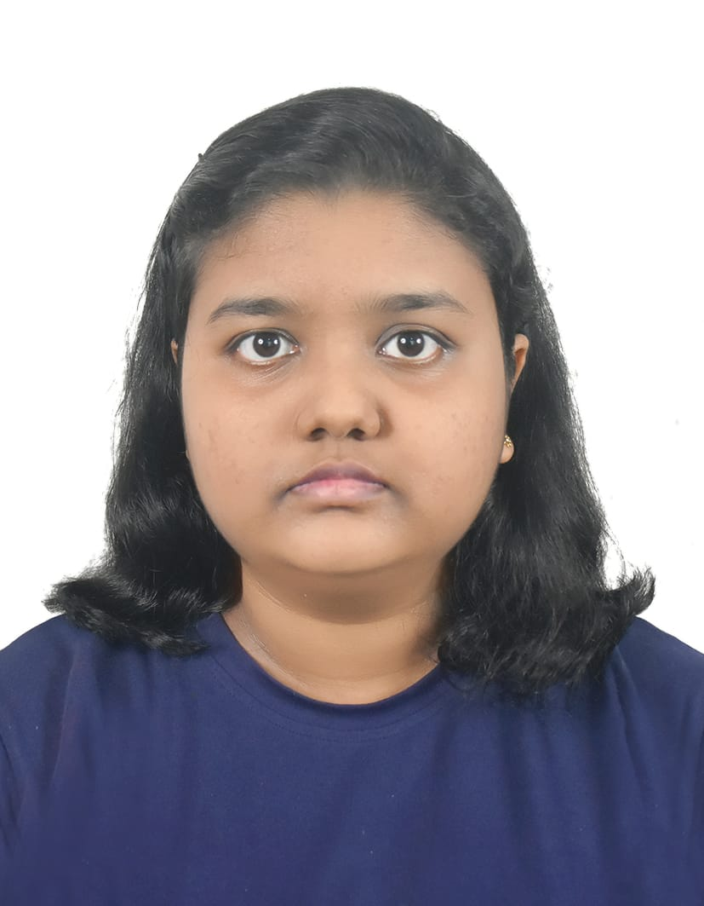

NISALI AMAYA RANATHUNGA
About Me
I am a passionate and dedicated undergraduate pursuing a BSc (Hons) in Biotechnology at SLIIT, focusing on applying scientific knowledge to real-world challenges. I am proactive in community and environmental projects and committed to continuous skill development in both IT and communication.
Educational Qualifications
Higher Education
BSc (Hons) in Biotechnology
- Sri Lanka Institute of Information Technology (SLIIT)
2025 – 2029 - Currently in the first year of the degree program.
Secondary Education
G.C.E. Advanced Level (A/L)
- Yasodara Devi Girls' School, Gampaha (2023)
- Biological Science Stream
- Grades: Chemistry - C, Biology - C, Physics - S
G.C.E. Ordinary Level (O/L)
- Yasodara Devi Girls' School, Gampaha (2020)
- Achieved 9 A grades.
Other Professional Qualifications
Diploma in Information Technology (IT)
ESOFT Metro Campus, Gampaha (2022)
Skills Gained: Graphic Designing, Microsoft Office Suite, Python, C#
Diploma in English
British Way English Academy, Nittambuwa (2025)
Focus on Spoken English and Communication.
Projects and Volunteering
"Roots of Tomorrow" Environmental Restoration Project (Volunteering)
Year: 2025
Role: Participant and contributor (as a member of Biotechnology Batch 11)
Description: This project involved planting 50 Mee trees in Wakwella, Galle, as part of a collective environmental restoration effort by the SLIIT Biotechnology batch.
Hobbies
- Reading Books
- Watching movies
- Craftsmanship
- Volunteering
Contact Details & Resume
Email: splotter27@gmail.com
You can download my full resume here: Download Resume (PDF Version)